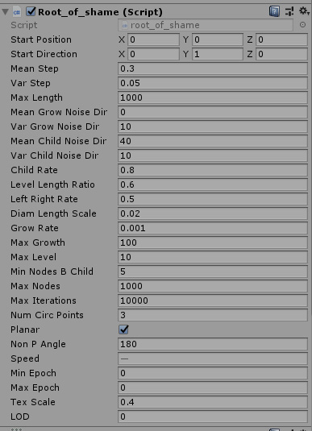
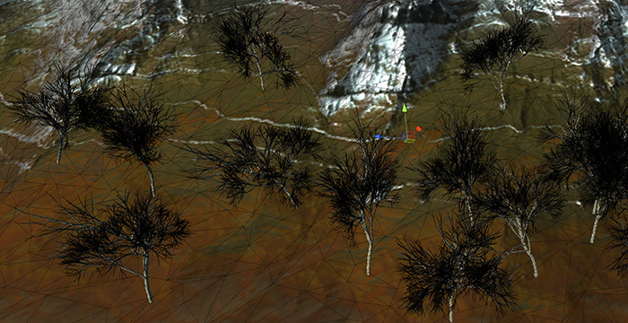

Procedural generation of tree-like meshes and animation
Procedural Meshes

In the assignment I we have prototyped in Scilab the generation of meshes with root-like shape and implemented it for blender in python. Now we have re-implemented it in C# for the Unity project and improved in some points like expanding the mesh skeleton to 3D, adding sub-epoch growth and the generation of the mesh triangles and vertices for any epoch and sub-epoch, hence being able to animate it smooth over time. In this process some new parameters appeared to control, among other things, the 3D dispersion of branches, texturing and level of detail.
Using the C# script is very simple, you attach it to an empty gameObject in unity, tweak the parameters and it will generate in real time the mesh of the tree/root growing over time
